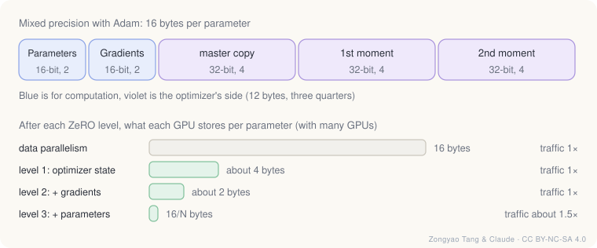
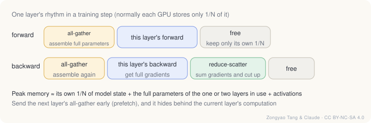

The thread: first work out exactly how much memory each parameter takes during training, and where the bulk is → in DDP every GPU stores exactly the same things, and ZeRO cuts this redundancy away in three levels → FSDP is PyTorch's implementation of the most thorough level, and the key is the rhythm of "when to assemble the parameters in full and when to let them go". This unit uses one conclusion from 6.1: all-reduce can be split into two halves, reduce-scatter and all-gather.
Part 7 · Distributed training7.2 ZeRO and FSDP
Translated by AI (Anthropic's Claude) from the Chinese edition. The Chinese original is the reference.
This unit answersWhat do you do when a model is too large to fit on one GPU?
Follows 7.1: in DDP every GPU stores exactly the same things, and this redundancy can be removed.
- Mixed precision + Adam: each parameter takes 16 bytes
- ZeRO: cut the redundancy apart, so each GPU looks after only 1/N
- FSDP's rhythm: assemble a layer in full only when it is used, let it go as soon as it has been used
Explanation
1Mixed precision + Adam: each parameter takes 16 bytes
A 16-bit parameter is 2 bytes and a 16-bit gradient 2 bytes, plus an fp32 master copy of the parameter at 4 bytes and Adam's two states at 4 bytes each: 16 bytes in all. A 7B model needs about 112 GB for these alone, before counting activations.
List everything tied to one parameter during training (the accounting of the ZeRO paper):
Contents Precision Bytes Parameter (used in forward and backward computation) 16-bit 2 Gradient 16-bit 2 Master copy of the parameter (used by the optimizer's update) 32-bit 4 Adam's first moment (momentum) 32-bit 4 Adam's second moment 32-bit 4 16 bytes in total. The last three rows are on the optimizer's side, 12 bytes together, three quarters of the total.
Why the optimizer uses 32 bits. Each step's update is very small compared with the parameter itself. With parameters stored in 16 bits, many small updates would simply be lost for lack of precision, and accumulated over time the training would go wrong. So the usual practice in mixed precision is: compute with the 16-bit copy (fast, as 1.5 explained), apply the update to the 32-bit master copy, and keep Adam's two states in 32 bits too.
Put in a number. A model with 7.5B parameters: 16 × 7.5×10⁹ = 120 GB. And that is only the "model state", without activations. It does not fit on one 80 GB GPU.
What this accounting is good for. When memory runs short, first tell which kind it is:
- Model state (the 16 bytes above × the number of parameters): independent of batch size, so making the batch smaller does not help. It needs the methods of this unit.
- Activations: proportional to batch size and sequence length. Making the batch smaller, or recomputing to save memory, helps.
- Temporary buffers and fragmentation: depend on the pattern of allocation (2.1).
A simple way to tell: halve the batch and see how much memory use goes down. If it barely goes down, the bulk is model state.
An analogyLike finding when moving house that there is not much furniture as such; what really takes up the space is all the spares and packaging.
So the bulk of memory is not the parameters themselves but the optimizer state; this is why ZeRO starts by sharding the optimizer state.
Builds on Adam = momentum + a step size of its own for each parameterFewer bits per number, half the data to moveSourcesZeRO paperZeRO paper, page 8, §3.1 model states: where 16Ψ comes fromZeRO paper, page 3, figure 1: memory compared across the three levels- Of the 16 bytes, which does each GPU need to keep its own copy of, and which not?
2ZeRO: cut the redundancy apart, so each GPU looks after only 1/N
In DDP every GPU stores the same things. ZeRO's level 1 cuts the optimizer state into N parts, with each GPU storing only one; level 2 also cuts the gradients; level 3 cuts even the parameters. Each GPU's memory use falls roughly in inverse proportion to the number of GPUs.

At the top, the 16 bytes of the previous card; below, what each of the three levels cuts away ZeRO's observation is that in data parallelism, each GPU does not need all 16 bytes at every moment of a training step. Cut them in order of "how briefly they are needed", from easy to hard.
Level 1: cut the optimizer state (the 12-byte part). The optimizer state is used only at the moment the parameters are updated. Divide the parameters into N segments, and have each GPU update only one of them; then it only needs to store that segment's optimizer state.
- Memory: each parameter falls from 16 bytes to 4 + 12/N bytes, close to 4 bytes with many GPUs, about a quarter of the original.
- Communication: gradients are synchronised as usual. After each GPU has updated its own segment of parameters, it has to distribute the updated parameters to everyone, which is an all-gather. As 6.1 said, "reduce-scatter the gradients, then all-gather the parameters" has the same traffic as one all-reduce, so total communication is unchanged.
Level 2: also cut the gradients. Since each GPU updates only its own segment, it also needs only that segment's summed gradients. Gradient synchronisation changes from all-reduce to reduce-scatter; each GPU keeps only its own segment, and the other segments can be thrown away once computed.
- Memory: each parameter falls to 2 + 14/N bytes, close to 2 bytes, about an eighth of the original.
- Communication: still the same as data parallelism.
Level 3: cut even the parameters. Normally each GPU stores only 1/N of the parameters. When the forward or backward pass reaches a part that needs certain parameters, they are gathered from the other GPUs for the moment (all-gather), and thrown away after use.
- Memory: each parameter falls to 16/N bytes, in inverse proportion to the number of GPUs. In theory, with enough GPUs, a model of any size fits.
- Communication: the forward pass all-gathers the parameters once, the backward pass once more, plus the reduce-scatter of the gradients. The paper works out the total as 1.5 times that of data parallelism.
Level Sharded About per parameter Traffic Data parallelism Nothing 16 bytes 1 × Level 1 Optimizer state 4 bytes 1 × Level 2 Plus gradients 2 bytes 1 × Level 3 Plus parameters 16/N bytes 1.5 × This is the classic case of "trade communication for memory" from 0.1: do not store it; fetch it from elsewhere when it is needed.
How to choose. The first two levels come almost for free, with no extra communication. Level 3 trades 1.5 times the communication for memory that falls with the number of GPUs; whether that is worth it depends on whether the communication can be hidden behind computation, which is exactly the engineering problem FSDP solves in the next card.
An analogyLike several people sharing a flat: rather than each buying a whole set of furniture, each buys one piece and they borrow from each other when needed.
So the more GPUs, the larger the model that can be trained; the price is communication: levels 1 and 2 have the same traffic as DDP, level 3 about 1.5 times DDP's.
Builds on DDP's cost: every GPU stores a whole copy of the model and the optimizer stateall-reduce = reduce-scatter + all-gatherUsed later in FSDP's rhythm: assemble a layer in full only when it is used, let it go as soon as it has been usedSourcesZeRO paperZeRO paper, page 2: summary of the three levelsZeRO paper, page 10, §5: sharding optimizer state and gradientsZeRO paper, page 11, §5.3: sharding parametersZeRO paper, page 14, §7 communication analysis: where 1.5× comes from- The idea of level 3 is simple; doing it raises one key question: when to gather the parameters and when to release them, so as to save memory without slowing training down.
3FSDP's rhythm: assemble a layer in full only when it is used, let it go as soon as it has been used
Normally each GPU stores only its own share of the parameters. When the forward pass reaches a layer, it first all-gathers that layer's full parameters, and releases them as soon as the computation is done; in the backward pass it assembles them once more, and after computing the gradients, uses reduce-scatter to sum the gradients and cut them back into each GPU's share. The next layer's parameters are prefetched in advance.
FSDP is PyTorch's implementation of ZeRO level 3. It divides the model into a number of "units" (usually one Transformer layer is one unit), and gathers and releases parameters unit by unit.
The rhythm of one training step (taking one layer as an example):
- Normally: each GPU stores only 1/N of this layer's parameters.
- Before the forward pass reaches this layer: all-gather, assembling this layer's full parameters.
- This layer's forward computation.
- Once computed: release the full parameters just assembled, keeping only its own 1/N.
- Before the backward pass comes back to this layer: all-gather once more.
- This layer's backward computation, giving the full gradients.
- reduce-scatter: sum the gradients and cut them up, each GPU keeping only its own 1/N; at the same time release the full parameters.
- After all layers are done, each GPU updates its own segment of parameters with its own segment of gradients.

The same layer is assembled once in the forward pass and once in the backward pass So peak memory ≈ its own 1/N of all model state + the full parameters of the one or two layers in use + activations. The total size of the model is no longer limited by one GPU's memory.
The granularity of units is a trade-off. The smaller the units, the fewer parameters are "assembled in full" at the same time, and the lower peak memory; but the more communications there are, the smaller each one's data, and the larger the share of fixed latency. Treat the whole model as one unit and it degenerates into "assemble all parameters at once before the forward pass", with no memory benefit at all.
How not to slow training down. Every layer has to wait for an all-gather before it can start computing; if it simply waits, communication sits squarely on the computation's path. FSDP's answer is prefetching:
- In the forward pass, while computing layer k, start layer k+1's all-gather in advance. By the time layer k is computed, the next layer's parameters have most likely arrived.
- Likewise in the backward pass, gather the next layer to be used in advance. There is a difficulty here: PyTorch executes eagerly, and FSDP does not know beforehand in what order the backward pass will go through the layers. Its answer is to record the order the layers ran in during the forward pass, reverse it, and use that as an estimate of the backward order.
Prefetching cannot be too aggressive either. Gather many layers ahead at once, and memory goes back up. So FSDP has a rate limiter that controls how many sets of full parameters can be "in flight" at once.
Compared with DDP.
DDP FSDP Model state stored on each GPU All of it 1/N Communication per step All-reduce of the gradients Per layer: two all-gathers, one reduce-scatter Traffic 1 × About 1.5 × How communication overlaps computation Gradient buckets, overlapping the backward pass Prefetching the next layer's parameters Suits Models that fit on one GPU Models that do not fit on one GPU So troubleshooting FSDP's performance looks at much the same things as DDP, plus one more: whether the all-gathers are hidden by prefetching. If on the timeline every layer's computation is preceded by a stretch spent waiting for an all-gather, prefetching is not working or communication is too slow.
Source walkthrough: where FSDP hooks in its gathering and releasing
PyTorch has two generations of FSDP implementation; before reading the source, be clear which one you are using. The paths are from PyTorch 2.x; go by the version you have.
The first generation:
torch/distributed/fsdp/, used by wrapping modules withFullyShardedDataParallel(model, ...). This is what the FSDP paper describes.- The core data structure is
FlatParameter(_flat_param.py): all the parameter tensors of a unit are flattened and concatenated into one large one-dimensional tensor, then cut into N parts. So a unit needs only one all-gather instead of one per tensor. Reading this file shows how "concatenating, padding and splitting" are done. - The timing hangs on module hooks (
_runtime_utils.py): the hook before the forward pass gathers the parameters (unshard), the hook after the forward pass releases them (reshard), and the backward hooks gather parameters and do the reduce-scatter. The functions withpre_forward,post_forward,pre_backwardandpost_backwardin their names are these places. - The logic of prefetching and rate limiting is in this file too; search for
prefetch.
The second generation (often called FSDP2):
torch/distributed/_composable/fsdp/, used asfully_shard(module). TorchTitan uses this one.- Parameters are no longer concatenated into one large tensor; each parameter is sharded on its own and represented with PyTorch's "distributed tensor" (DTensor). The benefit is that each parameter keeps its own identity, it combines more easily with other forms of parallelism (tensor parallelism), and freeing memory is more predictable.
- The timing of gathering and releasing likewise hangs on the module's forward and backward hooks; the idea is unchanged.
Read with these questions in mind:
- On which CUDA stream is a unit's all-gather started? How does it avoid blocking computation?
- After the full parameters are released, is that memory given back to the allocator at once? (This bears on the memory caching and fragmentation of 2.1; the paper discusses this specifically, and it is why the rate limiter exists.)
- With mixed precision, does the all-gather carry the 32-bit master copy or the 16-bit copy? (Carrying 16 bits halves the traffic.)
This walkthrough is based on the paper and an understanding of the code's structure, without checking line by line against a specific PyTorch version.
An analogyLike borrowing from a library: borrow a chapter only when you are about to read it, return it as soon as you have read it, and keep on your own shelf only the part you are responsible for looking after.
So peak memory depends only on "your own share + the full parameters of the current layer"; prefetching lets communication overlap computation, so training is not slowed down.
Builds on ZeRO: cut the redundancy apart, so each GPU looks after only 1/Nall-reduce = reduce-scatter + all-gatherUsed later in Forms of parallelism combined in layers by bandwidthDistributed checkpoints: each process saves its own, without making training stop and waitSourcesPyTorch FSDP paperFSDP paper, page 3, figure 1: gathering and freeing within a training stepFSDP paper, page 5: FlatParameter and shardingFSDP paper, page 6, §3.3: overlapping communication and computationFSDP paper, page 7: backward prefetching and the rate limiter
Putting it together
With mixed precision and Adam, each parameter takes 16 bytes, 12 of them optimizer state. ZeRO cuts the optimizer state, the gradients and the parameters in turn into N parts, with each GPU storing only one; memory falls with the number of GPUs, and communication grows at most to 1.5 times the original. FSDP works layer by layer: a layer is all-gathered into full only when it is about to be used, released as soon as it has been used, and its gradients are cut back by reduce-scatter; prefetching lets this communication overlap with computation.
Test yourself
Without looking back at the explanation, say it in your own words.
- When training with mixed precision and Adam, why does each parameter take 16 bytes? What is the largest part of it?
- What does each of ZeRO's three levels shard? How much memory does each save, and how much communication does each add?
- In one training step, what communication does FSDP do for each layer? How does it keep this communication from slowing training down?